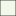
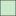
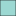

<!doctype html>
<html lang="en">
    <head>
        <meta charset="utf-8">
        <meta http-equiv="X-UA-Compatible" content="IE=edge">
        <meta name="viewport" content="initial-scale=1,user-scalable=no,maximum-scale=1,width=device-width">
        <meta name="mobile-web-app-capable" content="yes">
        <meta name="apple-mobile-web-app-capable" content="yes">
        <link rel="stylesheet" href="css/leaflet.css">
        <link rel="stylesheet" href="css/qgis2web.css"><link rel="stylesheet" href="css/fontawesome-all.min.css">
        <style>
        html, body, #map {
            width: 100%;
            height: 100%;
            padding: 0;
            margin: 0;
        }
        </style>
        <title>Percentage of Households in Counties Without Internet Access</title>
    </head>
    <body>
        <div id="map">
        </div>
        <script src="js/qgis2web_expressions.js"></script>
        <script src="js/leaflet.js"></script>
        <script src="js/leaflet.rotatedMarker.js"></script>
        <script src="js/leaflet.pattern.js"></script>
        <script src="js/leaflet-hash.js"></script>
        <script src="js/Autolinker.min.js"></script>
        <script src="js/rbush.min.js"></script>
        <script src="js/labelgun.min.js"></script>
        <script src="js/labels.js"></script>
        <script src="data/215556_1.js"></script>
        <script src="data/168215_2.js"></script>
        <script src="data/136168_3.js"></script>
        <script src="data/10136_4.js"></script>
        <script src="data/1610_5.js"></script>
        <script>
        var map = L.map('map', {
            zoomControl:true, maxZoom:28, minZoom:1
        })
        var hash = new L.Hash(map);
        map.attributionControl.setPrefix('<a href="https://github.com/tomchadwin/qgis2web" target="_blank">qgis2web</a> &middot; <a href="https://leafletjs.com" title="A JS library for interactive maps">Leaflet</a> &middot; <a href="https://qgis.org">QGIS</a>');
        var autolinker = new Autolinker({truncate: {length: 30, location: 'smart'}});
        var bounds_group = new L.featureGroup([]);
        function setBounds() {
            if (bounds_group.getLayers().length) {
                map.fitBounds(bounds_group.getBounds());
            }
        }
        map.createPane('pane_StamenTonerLite_0');
        map.getPane('pane_StamenTonerLite_0').style.zIndex = 400;
        var layer_StamenTonerLite_0 = L.tileLayer('https://stamen-tiles.a.ssl.fastly.net/toner-lite/{z}/{x}/{y}.png', {
            pane: 'pane_StamenTonerLite_0',
            opacity: 1.0,
            attribution: '<a href="https://maps.stamen.com/">Map tiles by Stamen Design, under CC BY 3.0. Data by OpenStreetMap, under ODbL</a>',
            minZoom: 1,
            maxZoom: 28,
            minNativeZoom: 0,
            maxNativeZoom: 20
        });
        layer_StamenTonerLite_0;
        map.addLayer(layer_StamenTonerLite_0);
        function pop_215556_1(feature, layer) {
            var popupContent = '<table>\
                    <tr>\
                        <td colspan="2"><strong>Name</strong><br />' + (feature.properties['NAME'] !== null ? autolinker.link(feature.properties['NAME'].toLocaleString()) : '') + '</td>\
                    </tr>\
                    <tr>\
                        <td colspan="2"><strong>State</strong><br />' + (feature.properties['State'] !== null ? autolinker.link(feature.properties['State'].toLocaleString()) : '') + '</td>\
                    </tr>\
                    <tr>\
                        <td colspan="2"><strong>Percentage Without Internet Access</strong><br />' + (feature.properties['B28002_cal'] !== null ? autolinker.link(feature.properties['B28002_cal'].toLocaleString()) : '') + '</td>\
                    </tr>\
                </table>';
            layer.bindPopup(popupContent, {maxHeight: 400});
        }

        function style_215556_1_0() {
            return {
                pane: 'pane_215556_1',
                opacity: 1,
                color: 'rgba(35,35,35,1.0)',
                dashArray: '',
                lineCap: 'butt',
                lineJoin: 'miter',
                weight: 1.0, 
                fill: true,
                fillOpacity: 1,
                fillColor: 'rgba(8,104,172,1.0)',
                interactive: true,
            }
        }
        map.createPane('pane_215556_1');
        map.getPane('pane_215556_1').style.zIndex = 401;
        map.getPane('pane_215556_1').style['mix-blend-mode'] = 'normal';
        var layer_215556_1 = new L.geoJson(json_215556_1, {
            attribution: '',
            interactive: true,
            dataVar: 'json_215556_1',
            layerName: 'layer_215556_1',
            pane: 'pane_215556_1',
            onEachFeature: pop_215556_1,
            style: style_215556_1_0,
        });
        bounds_group.addLayer(layer_215556_1);
        map.addLayer(layer_215556_1);
        function pop_168215_2(feature, layer) {
            var popupContent = '<table>\
                    <tr>\
                        <td colspan="2"><strong>Name</strong><br />' + (feature.properties['NAME'] !== null ? autolinker.link(feature.properties['NAME'].toLocaleString()) : '') + '</td>\
                    </tr>\
                    <tr>\
                        <td colspan="2"><strong>State</strong><br />' + (feature.properties['State'] !== null ? autolinker.link(feature.properties['State'].toLocaleString()) : '') + '</td>\
                    </tr>\
                    <tr>\
                        <td colspan="2"><strong>Percentage Without Internet Access</strong><br />' + (feature.properties['B28002_cal'] !== null ? autolinker.link(feature.properties['B28002_cal'].toLocaleString()) : '') + '</td>\
                    </tr>\
                </table>';
            layer.bindPopup(popupContent, {maxHeight: 400});
        }

        function style_168215_2_0() {
            return {
                pane: 'pane_168215_2',
                opacity: 1,
                color: 'rgba(35,35,35,1.0)',
                dashArray: '',
                lineCap: 'butt',
                lineJoin: 'miter',
                weight: 1.0, 
                fill: true,
                fillOpacity: 1,
                fillColor: 'rgba(67,162,202,1.0)',
                interactive: true,
            }
        }
        map.createPane('pane_168215_2');
        map.getPane('pane_168215_2').style.zIndex = 402;
        map.getPane('pane_168215_2').style['mix-blend-mode'] = 'normal';
        var layer_168215_2 = new L.geoJson(json_168215_2, {
            attribution: '',
            interactive: true,
            dataVar: 'json_168215_2',
            layerName: 'layer_168215_2',
            pane: 'pane_168215_2',
            onEachFeature: pop_168215_2,
            style: style_168215_2_0,
        });
        bounds_group.addLayer(layer_168215_2);
        map.addLayer(layer_168215_2);
        function pop_136168_3(feature, layer) {
            var popupContent = '<table>\
                    <tr>\
                        <td colspan="2"><strong>Name</strong><br />' + (feature.properties['NAME'] !== null ? autolinker.link(feature.properties['NAME'].toLocaleString()) : '') + '</td>\
                    </tr>\
                    <tr>\
                        <td colspan="2"><strong>State</strong><br />' + (feature.properties['State'] !== null ? autolinker.link(feature.properties['State'].toLocaleString()) : '') + '</td>\
                    </tr>\
                    <tr>\
                        <td colspan="2"><strong>Percentage Without Internet Access</strong><br />' + (feature.properties['B28002_cal'] !== null ? autolinker.link(feature.properties['B28002_cal'].toLocaleString()) : '') + '</td>\
                    </tr>\
                </table>';
            layer.bindPopup(popupContent, {maxHeight: 400});
        }

        function style_136168_3_0() {
            return {
                pane: 'pane_136168_3',
                opacity: 1,
                color: 'rgba(35,35,35,1.0)',
                dashArray: '',
                lineCap: 'butt',
                lineJoin: 'miter',
                weight: 1.0, 
                fill: true,
                fillOpacity: 1,
                fillColor: 'rgba(123,204,196,1.0)',
                interactive: true,
            }
        }
        map.createPane('pane_136168_3');
        map.getPane('pane_136168_3').style.zIndex = 403;
        map.getPane('pane_136168_3').style['mix-blend-mode'] = 'normal';
        var layer_136168_3 = new L.geoJson(json_136168_3, {
            attribution: '',
            interactive: true,
            dataVar: 'json_136168_3',
            layerName: 'layer_136168_3',
            pane: 'pane_136168_3',
            onEachFeature: pop_136168_3,
            style: style_136168_3_0,
        });
        bounds_group.addLayer(layer_136168_3);
        map.addLayer(layer_136168_3);
        function pop_10136_4(feature, layer) {
            var popupContent = '<table>\
                    <tr>\
                        <td colspan="2"><strong>Name</strong><br />' + (feature.properties['NAME'] !== null ? autolinker.link(feature.properties['NAME'].toLocaleString()) : '') + '</td>\
                    </tr>\
                    <tr>\
                        <td colspan="2"><strong>State</strong><br />' + (feature.properties['State'] !== null ? autolinker.link(feature.properties['State'].toLocaleString()) : '') + '</td>\
                    </tr>\
                    <tr>\
                        <td colspan="2"><strong>Percentage Without Internet Access</strong><br />' + (feature.properties['B28002_cal'] !== null ? autolinker.link(feature.properties['B28002_cal'].toLocaleString()) : '') + '</td>\
                    </tr>\
                </table>';
            layer.bindPopup(popupContent, {maxHeight: 400});
        }

        function style_10136_4_0() {
            return {
                pane: 'pane_10136_4',
                opacity: 1,
                color: 'rgba(35,35,35,1.0)',
                dashArray: '',
                lineCap: 'butt',
                lineJoin: 'miter',
                weight: 1.0, 
                fill: true,
                fillOpacity: 1,
                fillColor: 'rgba(186,228,188,1.0)',
                interactive: true,
            }
        }
        map.createPane('pane_10136_4');
        map.getPane('pane_10136_4').style.zIndex = 404;
        map.getPane('pane_10136_4').style['mix-blend-mode'] = 'normal';
        var layer_10136_4 = new L.geoJson(json_10136_4, {
            attribution: '',
            interactive: true,
            dataVar: 'json_10136_4',
            layerName: 'layer_10136_4',
            pane: 'pane_10136_4',
            onEachFeature: pop_10136_4,
            style: style_10136_4_0,
        });
        bounds_group.addLayer(layer_10136_4);
        map.addLayer(layer_10136_4);
        function pop_1610_5(feature, layer) {
            var popupContent = '<table>\
                    <tr>\
                        <td colspan="2"><strong>Name</strong><br />' + (feature.properties['NAME'] !== null ? autolinker.link(feature.properties['NAME'].toLocaleString()) : '') + '</td>\
                    </tr>\
                    <tr>\
                        <td colspan="2"><strong>State</strong><br />' + (feature.properties['State'] !== null ? autolinker.link(feature.properties['State'].toLocaleString()) : '') + '</td>\
                    </tr>\
                    <tr>\
                        <td colspan="2"><strong>Percentage Without Internet Access</strong><br />' + (feature.properties['B28002_cal'] !== null ? autolinker.link(feature.properties['B28002_cal'].toLocaleString()) : '') + '</td>\
                    </tr>\
                </table>';
            layer.bindPopup(popupContent, {maxHeight: 400});
        }

        function style_1610_5_0() {
            return {
                pane: 'pane_1610_5',
                opacity: 1,
                color: 'rgba(35,35,35,1.0)',
                dashArray: '',
                lineCap: 'butt',
                lineJoin: 'miter',
                weight: 1.0, 
                fill: true,
                fillOpacity: 1,
                fillColor: 'rgba(240,249,232,1.0)',
                interactive: true,
            }
        }
        map.createPane('pane_1610_5');
        map.getPane('pane_1610_5').style.zIndex = 405;
        map.getPane('pane_1610_5').style['mix-blend-mode'] = 'normal';
        var layer_1610_5 = new L.geoJson(json_1610_5, {
            attribution: '',
            interactive: true,
            dataVar: 'json_1610_5',
            layerName: 'layer_1610_5',
            pane: 'pane_1610_5',
            onEachFeature: pop_1610_5,
            style: style_1610_5_0,
        });
        bounds_group.addLayer(layer_1610_5);
        map.addLayer(layer_1610_5);
            var title = new L.Control();
            title.onAdd = function (map) {
                this._div = L.DomUtil.create('div', 'info');
                this.update();
                return this._div;
            };
            title.update = function () {
                this._div.innerHTML = '<h2>Percentage of Households in Counties Without Internet Access</h2>';
            };
            title.addTo(map);
        var baseMaps = {};
        L.control.layers(baseMaps,{' 1.6%-10%': layer_1610_5,' 10%-13.6%': layer_10136_4,' 13.6%-16.8%': layer_136168_3,' 16.8%-21.5%': layer_168215_2,' 21.5%-55.6%': layer_215556_1,"Stamen Toner Lite": layer_StamenTonerLite_0,},{collapsed:false}).addTo(map);
        setBounds();
        </script>
    </body>
</html>
